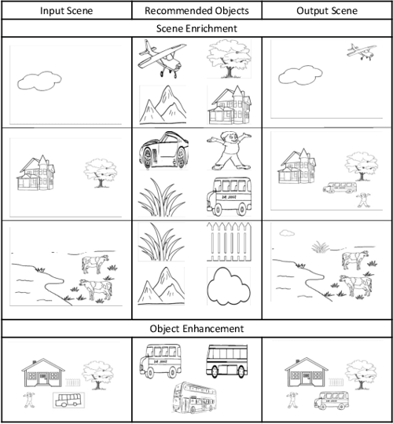
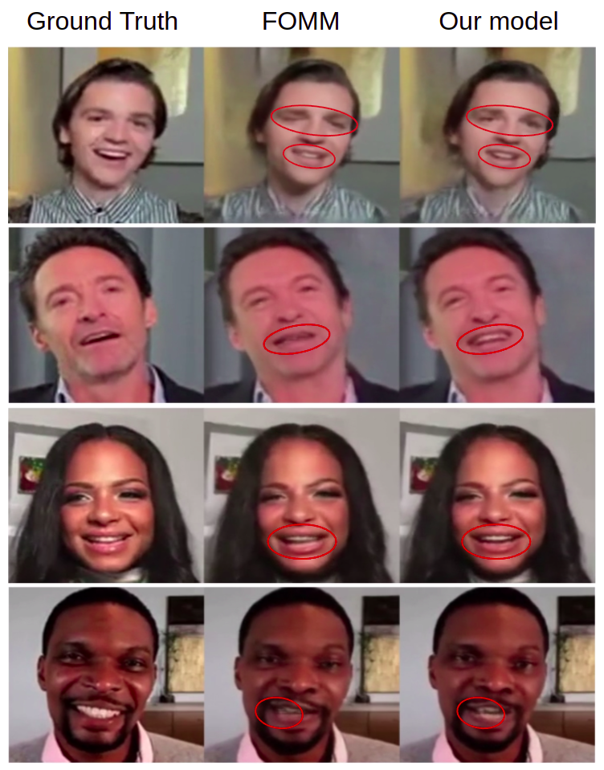

Hi! I'm a PhD student at University of Amsterdam, working under the supervision of Prof. Pascal Mettes and Dr. Erwin Berkhout.
As a part of the DSC Human-Aligned Video AI (HAVA) Lab, my research focuses on "Video AI for Enhancing Diagnostic Training in Dental Education,"
which involves developing deep learning models to assist dentists in diagnosing dental issues by creating novel views of teeth using advanced 3D reconstruction and generation techniques.
Previously, at Adobe Research, I primarily worked on Controlled Video Generation, Customization of Text-to-Image Generation Models (Stable Diffusion), and Graphics Design Layout Generation.
During my master's thesis we improved DeepFake-based controlled video generation to investigate the role of specific nonverbal cues in job interviews, under the guidance of
Prof. Dr. Dinesh Babu Jayagopi (Multimodal Perception Lab), in collaboration with the psychology department of the University of Lausanne. This project was my first major step towards human-aligned video generation.
We propose a diffusion model-based approach, FloAtControlNet to generate cinemagraphs composed of animations
of human clothing. The key observation is that the underlying animation is embedded in the flow of the normal
maps. We utilize the flow thus obtained to manipulate the self-attention maps of appropriate layers.
A deepfake-based study on facial expressiveness and social outcomes
Laetitia A. Renier,
Kumar Shubham,
Rahil Satyanarayan Vijay,
Swasti S. Mishra,
Emmanuelle P. Kleinlogel,
Dinesh B. Jayagopi,
Marianne S. Mast
Nature, Scientific Reports, 2024
paper
AI-generated faces or facial expressions using deepfake-based technologies might also contribute
to nonverbal behavior studies. As a proof of concept, in this research, we test the replicability
of past results regarding the positive effects of facial expressiveness (e.g., gazing, nodding, and
smiling) on social outcomes.

SketchBuddy: Context-Aware Sketch Enrichment and Enhancement
Aishwarya Agarwal, Anuj Srivastava, Inderjeet Nair,
Swasti S. Mishra, Vineeth Dorna, Sharmila R. Nangi,
Balaji V. Srinivasan ACM MMSys, 2023
paper
To accelerate sketch-based ideation and illustration workflows, we propose a novel framework,
SketchBuddy, which retrieves diverse fine-grained object suggestions to enrich a sketch and
coherently inserts it into the scene. Sketchbuddy detects objects in the input sketch to estimate
the scene context which is then utilized for the recommendation and insertion.

A Hybrid Rigid and Non-Rigid Motion Approximation for Generating Realistic Listening Behavior Videos Swasti S. Mishra, Kumar Shubham, Dinesh B. Jayagopi
ICVGIP, 2022
paper
We propose a hybrid model which can approximate a given motion using both first-order and zero-order motion. Therefore, our model takes
into account rigid bodies and non-rigid body-based motions, resulting in lesser artifacts around the lip and eye regions.
Firm dynamics and employee performance management in duopoly markets
Firm dynamics and employee performance management in duopoly markets
Prateksha Udhayanan, Swasti S. Mishra, Shrisha Rao
Physica A: Statistical Mechanics and its Applications, 2021
paper
The effects of the Peter Principle (PP) on a hierarchical firm have been extensively studied, but existing firm models fail to capture
real-world firm dynamics such as employee motivation and CEO characteristics. We thus extend an existing firm model to introduce the notion
of employee motivation and a CEO agent with parameters for leadership and managerial qualities, and incorporate the vitality curve.
{kind=link}